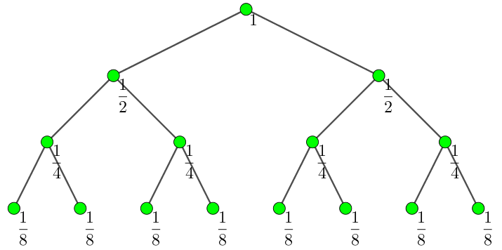

世界树的形态可以用一个数学模型来描述：世界树中有 $n$ 个种族，种族的编号分别从 $1$ 到 $n$，分别生活在编号为 $1$ 到 $n$ 的聚居地上，种族的编号与其聚居地的编号相同。
有的聚居地之间有双向的道路相连，道路的长度为 $1$。保证连接的方式会形成一棵树结构，即所有的聚居地之间可以互相到达，并且不会出现环。
定义两个聚居地之间的距离为连接他们的道路的长度；例如，若聚居地 $a$ 和 $b$ 之间有道路，$b$ 和 $c$ 之间有道路，因为每条道路长度为 $1$ 而且又不可能出现环，所以 $a$ 与 $c$ 之间的距离为 $2$。
出于对公平的考虑，第 $i$ 年，世界树的国王需要授权 $m_i$ 个种族的聚居地为临时议事处。对于某个种族 $x$ ($x$ 为种族的编号)，如果距离该种族最近的临时议事处为 $y$ ($y$ 为议事处所在聚居地的编号)，则种族 $x$ 将接受 $y$ 议事处的管辖 (如果有多个临时议事处到该聚居地的距离一样，则 $y$ 为其中编号最小的临时议事处)。
现在国王想知道，在 $q$ 年的时间里，每一年完成授权后，当年每个临时议事处将会管理多少个种族 (议事处所在的聚居地也将接受该议事处管理)。 现在这个任务交给了以智慧著称的灵长类的你：程序猿。请帮国王完成这个任务吧。
第一行包含一个正整数 $n$ ($n \leq 3 \times 10^5$)，表示世界树中种族的个数。
接下来 $n-1$ 行，每行两个正整数 $x, y$，表示 $x$ 聚居地与 $y$ 聚居地之间有一条长度为 $1$ 的双向道路。
接下来一行包含一个正整数 $q$ ($q \leq 3 \times 10^5$)，表示国王询问的年数。
接下来 $q$ 块，每块两行：
第 $i$ 块的第一行包含一个正整数 $m_i$ ($\sum m_i \leq 3 \times 10^5$)，表示第 $i$ 年授权的临时议事处的个数。
第 $i$ 块的第二行为 $m_i$ 个正整数 $h_1, h_2, \cdots, h_{m_i}$，表示第 $i$ 年被授权为临时议事处的聚居地编号 (保证互不相同)。
输出包含 $q$ 行，第 $i$ 行为 $m_i$ 个整数，该行的第 $j$ ($j = 1, 2, \cdots, m_i$) 个数表示第 $i$ 年被授权的聚居地 $h_j$ 的临时议事处管理的种族个数。
如果对每个询问暴力解决的话，那么时间复杂度将是 $O(n q)$ 的，显然不可接受。
不过能注意到 $\sum m_i$ 并不是很大，因此均摊下来每个询问要处理的点并不很多。
因此考虑直接在线做 (这题你还能离线？)，不过对于单次询问，绝大多数的点都不会被用到。那么如果我们只把要用的点 (即被询问的点) 搞出来计算答案可以吗？
答案是可以的，这就是虚树的思想。
当然，可以直观感受到，这些 (被询问的) 点的 LCA 也会被用到，因此，我们可以把这些点以及它们两两的 LCA 取出来建树，那么称这棵树为由那些点构成的虚树。可以证明，$m$ 个点构成的虚树的节点数是 $O(m)$ 的。
因此，假设如果我们对每棵虚树都能在 $O(m)$ 的时间内完成计算，那么总时间复杂度将变为 $O(m_1) + O(m_2) + \cdots + O(m_q) = O(m_1 + m_2 + \cdots + m_q) = O \left( \sum m_i \right)$，是正确的复杂度 (怎么感觉讲了一通废话啊)。
接下来考虑给定一些点 (不包括 LCA)，如何构造虚树。其实我们有构造虚树的经典算法——深度栈算法 (Depth Stack Algorithm)：
首先对原图进行 dfs，得到 dfs 序。
然后将被插入点按照 dfs 序排序，可以看出，排序后的顺序也是它们在虚树中的一个 dfs 序。
然后我们用一个栈来模拟在虚树中 dfs 产生的栈。
如果栈空，那么直接让此点入栈。
每当插入一个节点 $x$，我们令 $y$ 为 $x$ 与栈顶元素的 LCA ($y$ 可能等于栈顶)，为什么要这么做呢？因为这表明在虚树中进行 dfs 时，$y$ 这条路已经不用搜下去了，可以直接回溯到 $y$ 再往 $x$ 方向搜下去。
然后，如果栈顶元素比 $y$ 深，就一直弹出栈顶，知道栈顶的元素比 $y$ 浅 (或相等)。
如果此时的栈顶是 $y$，那么我们什么都不用干。否则将 $y$ 加入虚树，并在此过程中顺便维护一下虚树中各个节点的父节点。(当然如果栈空了直接扔下去即可)
最后将 $x$ 入栈。
最后我们就得到了这棵虚树中的点集，以及虚树中每个点的父节点 (也就是说我们已经知道了整棵虚树)。
接下来考虑计算答案的事情。
首先我们要求出对于每个虚树内的点，离它最近的议事处编号 $p_i$ 以及距离 $d_i$。我们考虑 DP。
初始状态下只有每个议事处的距离为 $0$，编号为本身。虚树中其它结点的距离为 $+ \infty$。
我们可以这样更新两次，就可以把所有点的 DP 值处理出来：
第一次从下往上更新，设 $x$ 是 $y$ 的父节点，则用状态 $\left( d_y + \mathrm{dist}(x, y), p_y \right)$ 更新 $(d_x, p_x)$。内部使用双关键字比较，即先比较距离，然后比较编号大小。
第二次从上往下更新，更新方法类似。
这样为什么是对的呢？显然是对的。考虑点 $u, v$。如果最终点 $v$ 被 $u$ 管辖，那么 $u$ 的状态首先会向上传入 $\mathrm{LCA}(u, v)$，然后再向下传到 $v$。注意这两步的顺序不能颠倒。
接下来，考虑虚树外的点 $v$，如何计算答案。
我们根据 $v$ 到原树根节点的路径将它们分成三类处理：
$v$ 在虚树外部。确切地说，即 $v$ 到根节点的这条路径没有经过虚树的任何节点 (也即不经过虚树的根节点)。如下图中右边的绿色点 (红色的点与边是虚树的)：
由于所有的议事处都在虚树内部 (与外部相对定义即可)，因此这个绿点一定是先走到虚树的根，再往虚树内部走。
因此我们可以直接计算出来，若虚树的根为 $r$，那么虚树外的所有点都将由 $p_r$ 管辖。这些点由多少个呢？当然是总点数减去以 $r$ 为根的子树大小 $\mathrm{size}(r)$，可以直接计算答案。
$v$ 在跳的过程中与虚树的一条边相交了 (如果它与虚树的边 $(f, x)$ 交于 $f$ 或 $x$ 则不算相交，算第 3 种情况)。如上图中的两个黄色点，就和一条红边相交了。
由于整棵虚树包含了所有的议事处，因此这些黄点只有两种选择：一种走到上面的红点 $f$，一种走到下面的红点 $x$。
若 $p_f = p_x$，那么毋庸置疑，这些黄点肯定由 $p_x$ 管辖。(总数下面会讲)
否则，说明 $f$ 和 $x$ 被管辖的议事处是不同的 ($p_f \neq p_x$)。这是我们不妨记它们到 $p_f, p_x$ 的对应距离分别为 $d_f, d_x$ (沿用上面的记号)，再令 $D = \mathrm{dist}(f, x)$。根据最优化定义，显然有 $|d_f - d_x| \leq D$ (否则就不是最优解了)。
那么当黄点跳到这条红边上时 (确切说，应该是红边上的蓝点 $b$)，它到 $p_f$ 和 $p_x$ 的距离之和应该是 $d_f + d_x + D$。因此，它最终去 $p_x$ 就当且仅当 $\mathrm{dist}(b, x) + d_x \leq \dfrac {d_f + d_x + D} 2$
由于 $\mathrm{dist}(b, x) = \mathrm{depth}(x) - \mathrm{depth}(b)$，故只需 $\mathrm{depth}(b) \geq \mathrm{depth}(x) + d_x - \dfrac {d_f + d_x + D} 2$。
可以发现不等式右端是一个常数 $C$ (由上述不等式可以得到 $\mathrm{depth}(f) \leq C \leq \mathrm{depth}(x)$)。因此我们只需统计有多少个点跳上来与红边的交点 $b$ 的深度 $\geq C$ 即可。假设红边上深度为 $C$ 的点为 $c$，那么答案就应该是 $\mathrm{size}(c) - \mathrm{size}(x)$ (当然要特判一下取等号的情况，因为如果取等号就要走编号小的节点)。
那么与红边相交的点一共有多少个呢？(注意不能相交于端点)设 $f$ 在 $x$ 方向上的子节点为 $y$，那么一共就有 $\mathrm{size}(y) - \mathrm{size}(x)$ 个。
因此还会有 $\mathrm{size}(y) - \mathrm{size}(c)$ 个点最终去的是 $p_f$。
$v$ 在跳的过程中与虚树的某个点 (可以是虚树的根) 重合了。如上图中左边的绿色点，与根相交。
这种点的决策非常简单，假如说它与 $x$ 相交，那么最终肯定由 $p_x$ 管辖，关键是统计这种点的个数。
其实，我们只需要在 $\mathrm{size}(x)$ 中去掉所有在虚树中的子节点的 $\mathrm{size}(y)$ 的和，剩下的就是交于 $x$ 的个数。证明也不难，因为 $\mathrm{size}(x)$ 是经过 $x$ 的个数 (当然可能是与边相交的)，然后减去 $\mathrm{size}(y)$ 就是把与边相交的这部分去掉。
因此可以再计算第 2 种情况的点时顺便把第 3 种情况的数值也处理出来。
最终是实现上的小细节，即如何快速找到一条路径上深度为 $x$ 的点？这个大家应该都很熟练了，可以使用倍增实现，即先预处理任意一个点的 $2^k$ 级父节点，然后根据它们的距离差按照 $2$ 的幂跳。
同理，"$f$ 在 $x$ 方向上的子节点" 也可以使用这个方法，即让 $x$ 跳到深度为 $\mathrm{dist}(f) + 1$ 的点即可。
总时间复杂度 $O \left( q + \left( n + \sum m_i \right) \log n \right)$。
#include <bits/stdc++.h>
#define LN 20
#define N 341468
#define M 682936
#define INF 0x3f3f3f3f
#define stack scx
#define lg2(x) (31 - __builtin_clz(x))
using namespace std;
struct state{
int d, p;
state (int distance = INF, int point = 0): d(distance), p(point) {}
inline bool operator < (const state B) const {return d < B.d || d == B.d && p < B.p;}
}f[N];
int n, m, q;
int h[N], _h[N];
int top = 0, stack[N];
int cnt = 0, v[N], p[N];
int dis[N], remain[N], ans[N];
namespace Tree{
int E = 0, cnt = 0;
int to[M], first[N], next[M];
int dep[N], size[N], P[LN][N], *p = *P;
int id[N], st[LN][M], *ord = *st;
inline void addedge(int u, int v){
to[++E] = v; next[E] = first[u]; first[u] = E;
to[++E] = u; next[E] = first[v]; first[v] = E;
}
inline int dmin(const int A, const int B) {return dep[A] < dep[B] ? A : B;}
void dfs(int x){
int i, y; size[x] = 1;
id[x] = cnt; ord[cnt++] = x;
for(i = 0; i < LN - 1 && P[i][x]; ++i) P[i + 1][x] = P[i][P[i][x]];
for(i = first[x]; i; i = next[i])
if((y = to[i]) != p[x]){
p[y] = x; dep[y] = dep[x] + 1;
dfs(y); ord[cnt++] = x;
size[x] += size[y];
}
}
void build_st_table(){
int *f, *g = ord, i, j, k = cnt;
for(j = 0; 1 << j + 1 <= cnt; ++j){
f = g; g = st[j + 1]; k -= (1 << j);
for(i = 0; i < k; ++i)
g[i] = dmin(f[i], f[i + (1 << j)]);
}
}
inline int LCA(int x, int y){
int L = min(id[x], id[y]), R = (id[x] ^ id[y] ^ L) + 1, D = R - L, c = lg2(D);
return dmin(st[c][L], st[c][R - (1 << c)]);
}
int jump_until(int x, int H){
int i;
for(i = LN - 1; i >= 0; --i)
if(dep[x] - (1 << i) >= H)
x = P[i][x];
return x;
}
}
inline bool idcmp(const int A, const int B) {return Tree::id[A] < Tree::id[B];}
void build(){
using Tree::LCA; using Tree::dep;
int i, x, y;
memcpy(_h, h, m << 2);
sort(h, h + m, idcmp); cnt = 0;
for(; top; --top) stack[top] = 0;
for(i = 0; i < m; ++i){ // depth stack algorithm -- build 'virtual tree'
x = h[i];
if(!top) {stack[++top] = v[++cnt] = x; continue;}
stack[top + 1] = 0; // key !!!
for(y = LCA(x, stack[top]); dep[stack[top]] > dep[y]; --top);
p[stack[top + 1]] = y;
if(stack[top] != y) {p[y] = stack[top]; stack[++top] = v[++cnt] = y;}
p[x] = stack[top]; stack[++top] = v[++cnt] = x;
}
sort(v + 1, v + (cnt + 1), idcmp);
for(i = 1; i <= cnt; ++i) {f[v[i]] = state(); ans[v[i]] = 0;}
for(i = 0; i < m; ++i) f[h[i]] = state(0, h[i]);
}
void dp(){
using Tree::size; using Tree::dep; using Tree::jump_until;
int i, x, y, z, px, len, mid;
state r;
for(i = 1; i <= cnt; ++i){ // init
x = v[i]; remain[x] = size[x];
dis[x] = dep[x] - dep[p[x]];
}
for(i = cnt; i > 1; --i){ // dp up
x = p[y = v[i]];
r = state(f[y].d + dis[y], f[y].p);
if(r < f[x]) f[x] = r;
}
for(i = 2; i <= cnt; ++i){ // dp down
y = p[x = v[i]];
r = state(f[y].d + dis[x], f[y].p);
if(r < f[x]) f[x] = r;
}
ans[f[v[1]].p] += n - size[v[1]];
for(i = 2; i <= cnt; ++i){ // other vertices
px = p[x = v[i]]; y = jump_until(x, dep[px] + 1);
remain[px] -= size[y];
if(f[px].p == f[x].p) {ans[f[x].p] += size[y] - size[x]; continue;}
len = f[px].d + f[x].d + dis[x];
mid = dep[x] + f[x].d - (len >> 1);
mid += !(len & 1) && f[px].p < f[x].p;
z = jump_until(x, mid);
ans[f[x].p] += size[z] - size[x];
ans[f[px].p] += size[y] - size[z];
}
for(i = 1; i <= cnt; ++i) ans[f[v[i]].p] += remain[v[i]];
}
int main(){
int u, v, i;
scanf("%d", &n);
for(i = 1; i < n; ++i) {scanf("%d%d", &u, &v); Tree::addedge(u, v);}
Tree::dfs(1); Tree::build_st_table();
for(scanf("%d", &q); q; --q){
scanf("%d", &m);
for(i = 0; i < m; ++i) scanf("%d", h + i);
build(); dp();
for(i = 0; i < m; ++i) printf("%d%c", ans[_h[i]], i == m - 1 ? 10 : 32);
}
return 0;
}
坑1：注意每次插入前把栈清空了，以免父节点标记设置错误。
坑2：DP 时要进行双关键字比较，因为可能出现距离相等的情况。